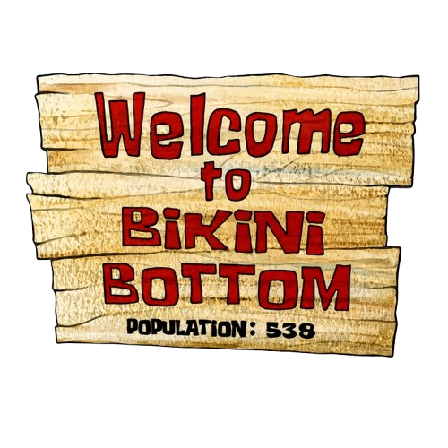

Patrick Starfish
Sahabat Setia SpongeBob SquarePants
Bintang laut merah muda yang ramah, santai, dan tinggal di bawah batu unik di kota bawah laut Bikini Bottom.
PELAJARI KISAH PATRICKBintang laut merah muda yang ramah, santai, dan tinggal di bawah batu unik di kota bawah laut Bikini Bottom.
PELAJARI KISAH PATRICK
Patrick Star adalah seekor bintang laut berwarna merah muda yang mengajarkan kita pentingnya menikmati kehidupan yang sederhana, kesetiaan dalam bersahabat, dan selalu bahagia apa adanya. Tinggal di bawah sebuah batu besar di Bikini Bottom, Patrick selalu siap membawa keceriaan dan tawa bersama SpongeBob.
Ayo kenali dan jelajahi kehidupan di bawah laut bersama Patrick dan teman-temannya.